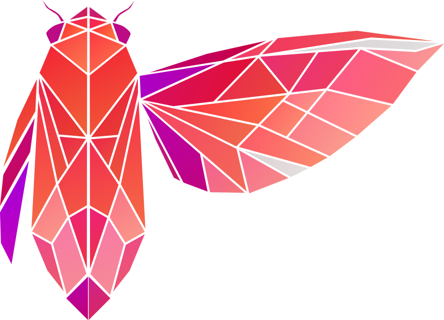

BRAND标识
VIS §2.0：蝉形是辅助图形，只出现在 favicon 与 侧栏组合标 两处。 页头 / 空状态 / 弹层 / 错误态 / 卡片角标 / 移动端顶栏 —— 蝉形与字标都不许进（v2.0 不扩大落位面）。 品牌层反白靠单独的线稿资产切换，不是 CSS 取色。
组合标 / 单独标（侧栏品牌位）
组合时用 MID 半展翅 + 字标；单独展示时用 MAX 全展翅。 不再把全展翅硬塞进文字旁边 —— 全展翅的重心是横向的，和竖排字标并置会互相抢。
 单独展示 · MAX 全展翅
单独展示 · MAX 全展翅
组合标几何：半展翅 MID 40×34px + 10px gap + 字标；
蝉形与字标垂直居中（半展翅重心偏上，不再用 baseline 对齐）。
单独标用 MAX 全展翅，最小独立尺寸 --brand-icon-min: 32px，不叠加文字。
品牌层纸墨（展示面）

SiMuseor司梦工作台
品牌层六枚固定 HEX、主题不变；深色与浅色共用同一份彩色资产（新配色在深底对比度 4.5:1 以上），需要纯反白时用线稿 cicada-max-lineart-b.svg，不靠 CSS 反色。
--brand-paper 禁作 UI 表面（产品 UI 仍用 zinc 中性阶）。
蝉形单独使用（MAX 全展翅）
26×1256×26120×55240×111
单独展示只用 MAX 全展翅；半展翅 MID 不进独立位，只与字标组合。
蝉形可等比缩放，最小独立尺寸 --brand-icon-min: 32px；小于 20px 只用字首单体。
favicon 尺寸档
手工重制的 favicon 是一套方形画布资产：16 / 24 / 32 / 48 / 64 / 128 / 256 七档， 逐档独立出图，不做等比缩放导出的替代。产品侧用多尺寸合并 ICO，另备 PNG 档给需要位图的场合。


| 档位 | 画布 | 来源 | 说明 |
|---|---|---|---|
| 16 / 24 / 32 / 48 | 方形 | 逐档独立 | 浏览器标签页与系统小图标，最小 16px 仍可辨认机身与单侧翅 |
| 64 / 128 / 256 | 方形 | 逐档独立 | 高密度屏与安装图标；256 同时作为 favicon.svg 与 180 PNG 的母版 |
| 合并 ICO | 多尺寸 | 七档打包 | web/public/favicon.ico，浏览器按需取档 |
替换纪律：七档 ICO 与 PNG 全部来自手工重制的同一套矢量稿，改稿后必须整包重出， 不允许只替换其中一档——否则 16px 与 256px 会异构。透明底，自带暖色面片，不加底色板。
禁用方向
| 禁止 | 说明 |
|---|---|
| 蝉形进页头 / 空状态 / 弹层 / 错误态 | v2.0 不扩大落位面，蝉形只在 favicon 与侧栏组合标 |
| SiMuseor 标识进封面铭牌 | 铭牌 20px 槽位是第三方家族标 |
| 月桂对称环 / 盾形徽章 / 放射星芒 | §5 月桂已改判归「作品层荣誉母题」，不属品牌标志层 |
filter:invert() 做深色反白 | 等于改色；须用线稿资产 cicada-max-lineart-b.svg |
| 非等比拉伸 | 硬约束，无例外；favicon 七档均为方形画布，不靠压缩适配 |
| 墨黑字标压靛紫底 | §3.4 禁止组合 |